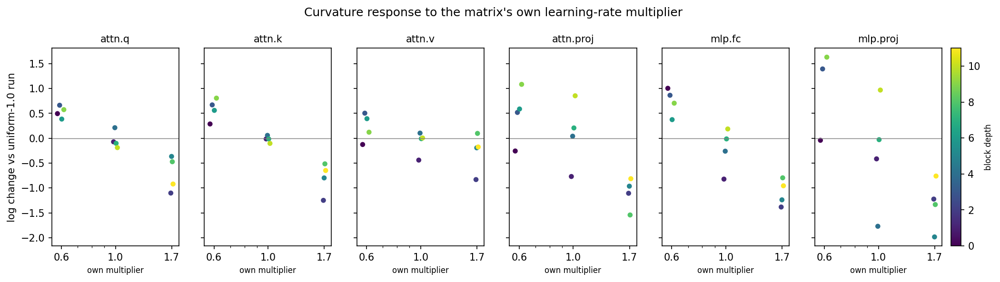
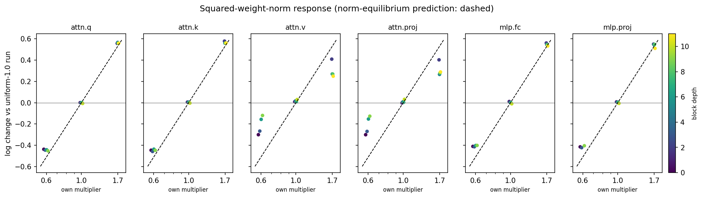
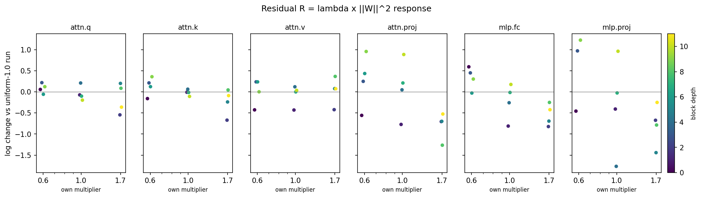

From momentum kernels to a momentum rule
Four empirical paths to a principled implementation · 31 August 2026
A principled momentum rule should choose how to weight gradient history from the optimizer's measured state. The rule must produce useful Muon directions and preserve the edge-of-stability dynamics that regularize the trajectory. Four paths could turn those requirements into a unique implementation.
A temporal kernel assigns weights to gradients of different ages before Muon takes the matrix sign. Its period-two response, F = |H(π)|, measures how much of a gradient component that reverses sign every step remains in the momentum matrix.
The experiments have narrowed the design space. Eliminating period-two response breaks training, while changing it across a broad positive range leaves loss and curvature nearly flat. Within that range, expressive kernels outperform a scheduled EMA mainly by changing matrix directions. Per-matrix learning rate independently moves each matrix's sharpness state. These findings support four routes below; they do not yet select one.
What the experiments establish
Period-two response supplies a guardrail

The period-two axis has a cliff and then a plateau. Reducing F by factors of two and four inside that plateau also leaves measured curvature nearly unchanged, directly refuting the proposed equilibrium law λ ∝ 1/F. We can use F to exclude destructive kernels; another property must choose among the survivors.
Expressive kernels contribute beyond EMA scheduling

Applying matched kernels to the same gradient history produces Muon updates with cosine similarities around 0.72–0.83. Their leading singular subspaces are nearly orthogonal. Mean age, period-two response, and total white-noise gain therefore leave the useful update direction underdetermined.
Sharpness control is local, and its nontrivial part is concentrated in projection matrices
For matrix i, write its leading restricted Hessian eigenvalue as λi and define the norm-corrected residual {{inline:residual}}. The three plots below show every matrix in the causal learning-rate intervention. Columns separate matrix types; color gives transformer-block depth.



Learning rate is therefore a local actuator, but “one residual law per matrix” is too coarse. A mechanism for the residual must explain why output projections respond strongly while q/k/v matrices barely respond, and why depth orders matrices within a type.
The four paths
P1 · A third-order-aware boundary controller
This path treats momentum as a constrained controller. At each state, the kernel proposes a direction with favorable true one-step loss; a nonlinear stability measurement rejects directions that leave the regularizing regime.
The need for both terms is already visible. In the same-state kernel test, one candidate improves the next true loss, yet loses to the deployed kernel after 100–400 training steps. The scalar leading curvature does not explain the reversal. The update changes the future state, so immediate descent cannot be the complete objective.
A quadratic expansion defines two cheap coordinates for a realized update Δ. Here g is the current gradient and H is the Hessian:
The ratio D/A reaches one where the quadratic approximation predicts zero loss change. Near the edge of stability, this cancellation is precisely why the quadratic boundary is inadequate: third-order geometry changes the curvature encountered by the next update and drives the feedback that pins the trajectory. We therefore retain D/A as an empirical state coordinate and measure the third directional derivative of the loss along Δ:
The virtual-step evaluator already computes true one-step loss and the directional cubic term. In the existing one-step measurements, including that term brings the Taylor prediction within roughly 20–30% of the measured loss, but the cubic term itself is small and similar across the candidate kernels. Its evolution during deployment remains unmeasured. The per-matrix learning-rate response surface supplies a second nonlinear readout: it measures how the occupied sharpness state moves after sustained changes in step size. P1 asks whether these trajectories separate the one-step winner from the long-horizon winner.
P2 · A kernel derived from measured spectra
This path treats momentum as optimal temporal filtering. Let Snoise(ω) and Ssignal(ω) denote measured noise and reproducible gradient energy, resolved by matrix mode. For a kernel response Hw(ω), solve
The first term suppresses measured noise; the second penalizes attenuation and phase lag of reproducible signal. Fix the basis filters, require unit response at zero frequency, and constrain the period-two response to the measured safe interval. The resulting equality- and inequality-constrained quadratic problem selects its own value of F inside the plateau and has a unique solution when the measured quadratic is strictly convex. The optimization has no swept decay hyperparameter.
The earlier scalar Wiener attempt failed because it classified an oscillatory band as junk and imposed zero period-two response, which the later scan showed to be destructive. The modern version changes both ingredients: the safe F plateau replaces cancellation, and the spectrum is resolved across matrix modes because matrix sign depends on where the filtered power lives. For reference, the scalar filtered power is {{inline:filtered_spectrum}}; P2 requires its covariance-valued analogue.
The immediate experiment is the common-tail pair. It matches kernels outside the recorded history window and changes their response in the live 16–40-step range. This isolates whether the observed in-band, mode-resolved spectrum contains the information that selected the better direction.
P3 · A learned state-to-kernel map
This path learns the controller after identifying its inputs. For each matrix and checkpoint, measure candidate state variables—mode-resolved gradient spectra, weight norm, residual R, matrix type and depth, cubic response—and regress the kernel that wins a short continuation.
The data justify state dependence: per-matrix learning-rate elasticities are reproducible within one state and drift across checkpoints; the residual response is concentrated in projection matrices; and one-step kernel rankings invert over a continuation. A global schedule indexed only by training step discards all three structures.
P3 is deliberately downstream of P1 and P2. Those paths test which variables have causal or predictive value. Feeding every available statistic into a flexible selector would recover an empirical policy without explaining momentum and would leave no principled compression target.
P4 · A compressed empirical schedule
This path compresses behavior without claiming a mechanism. Fit a low-dimensional schedule to the best kernels observed along one reference trajectory, then reduce it to a fixed formula with zero or one exposed knob.
The current evidence makes P4 a fallback. Scheduled K8 beats a scheduled single EMA by roughly an order of magnitude in gain, while matched one-step tests show that scalar kernel summaries leave the update direction underdetermined. A schedule can imitate one trajectory yet fail when the matrix state or training stack changes.
How the paths interact
| Next result | Research decision |
|---|---|
| Cubic and response-surface measurements explain the horizon inversion. | Advance P1 and use P2's spectral solver to propose directions inside its constraint. |
| The common-tail pair validates mode-resolved in-band matching. | Advance P2; test whether its unique constrained solution also satisfies P1's nonlinear boundary. |
| Neither measurement predicts continuation behavior. | Use P3 to discover the missing state variable, with strict held-out transfer as the gate. |
| A successful state policy collapses onto training progress alone. | Distill it through P4 into the final zero- or one-knob schedule. |
The research program now has a falsifiable shape. P1 asks what constraint preserves useful marginal dynamics. P2 asks what temporal filter gives the best direction under measured signal and noise. P3 asks whether those ingredients suffice across states and matrices. P4 is compression after understanding—or a fallback if mechanistic paths fail. Each path ends in a unique implementation, and each has a result that stops it.
Scope. The period-two scan is a discovery measurement from shared checkpoint forks. The four-seed K8 comparison estimates scale in this NanoGPT/Muon stack. The per-matrix causal plots come from one shared-state intervention; replicated and graph-resolved confirmation is in progress.